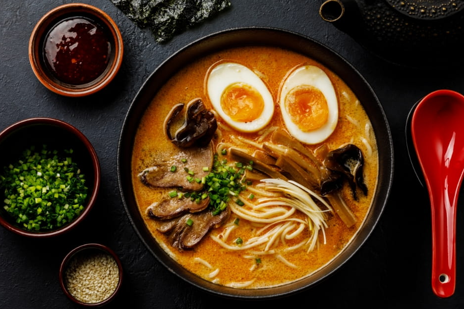
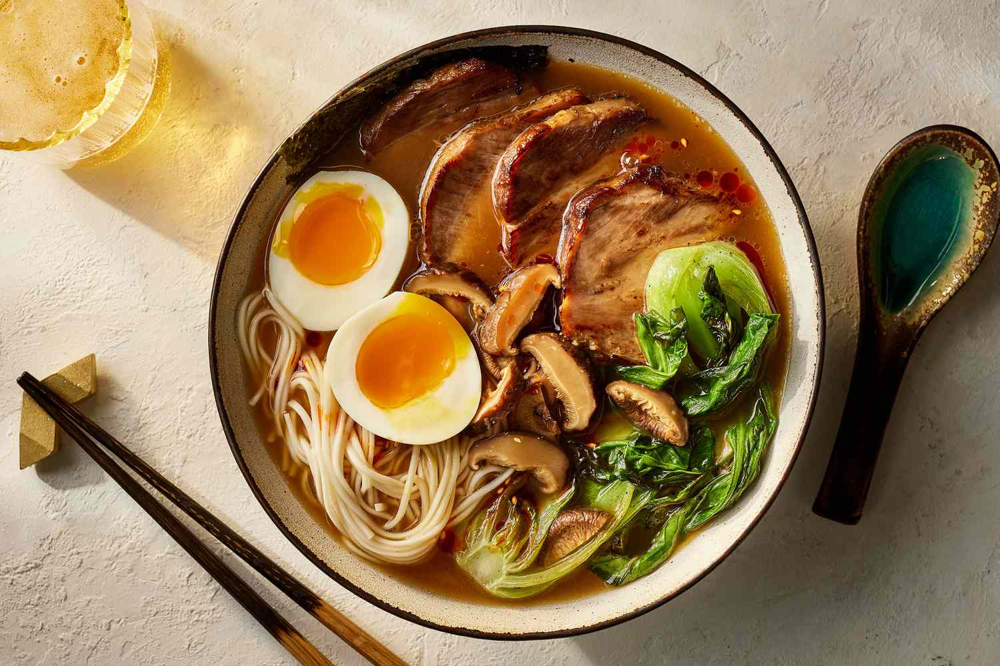
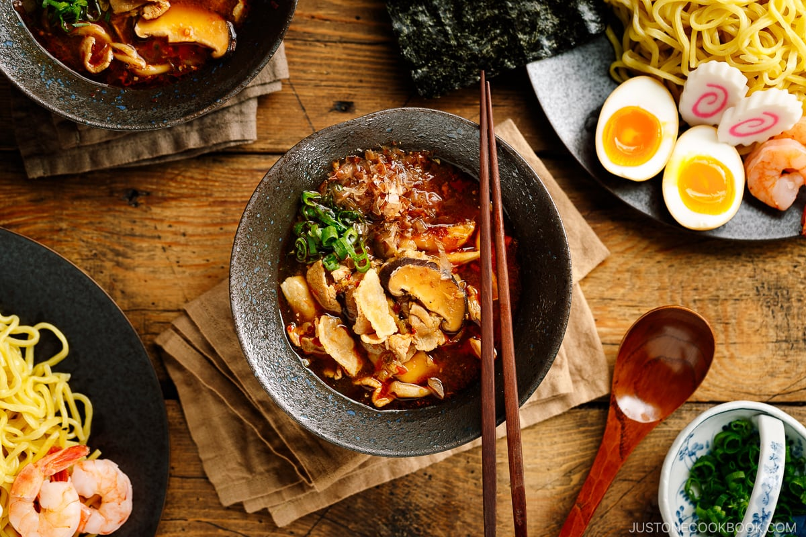
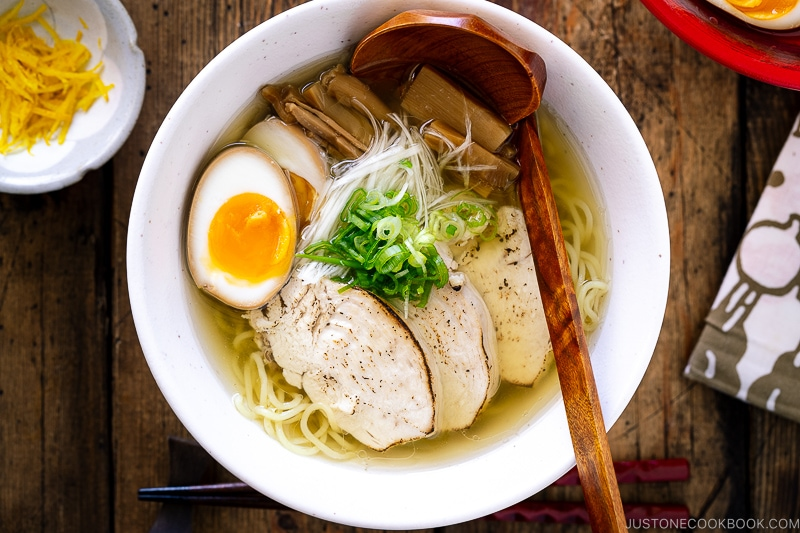
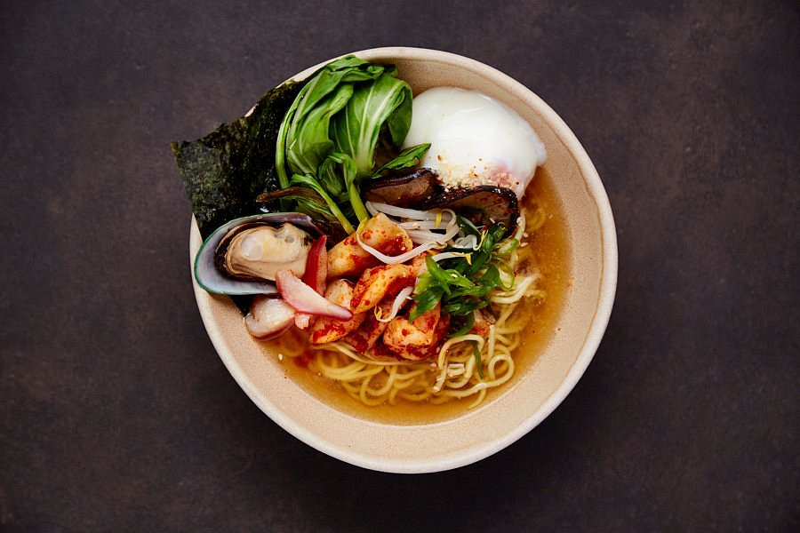

Discover Our Delicious Ramen Creations

Kaisen Ramen
Dive into the ocean’s finest flavors with our Kaisen Ramen, featuring fresh seafood simmered in a savory broth, topped with succulent shrimp, squid, and tender fish for a truly refreshing and hearty bowl!

Tonkotsu Ramen
Experience the rich, creamy goodness of Tonkotsu Ramen, made from a slow-simmered pork bone broth that delivers a velvety, savory flavor, paired perfectly with tender slices of chashu pork and fresh toppings.

Ramen3
Chieeee

Ramen1
Chieeee

Ramen2
Chieeee

Ramen2
Chieeee